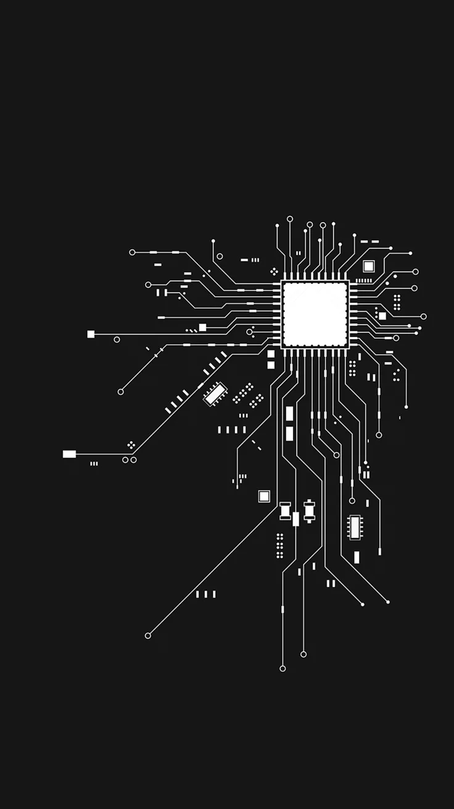

Websites
Premium responsive websites with clear structure and refined UI.
I help businesses turn scattered ideas into clear systems, structured workflows, Notion workspaces, and premium digital experiences.
I build clean digital systems that turn scattered ideas into usable, structured experiences.
Premium responsive websites with clear structure and refined UI.
Structured dashboards and workspaces that simplify execution.
Turning scattered processes into clean, usable systems.
AI-assisted workflows that save time and reduce manual work.
Organizing ideas and information into clear decision systems.
Building prompt logic that produces more useful outputs.
A unified text and image panel that blends dark cosmic tones with soft highlights for a premium, readable process presentation.
I clarify the goal, structure the idea, and decide what the website, system, or workflow actually needs to communicate.
I use AI-assisted workflows, prompts, and fast iteration to create the first working version with clean structure.
I improve spacing, responsiveness, visuals, copy, and usability until the output feels polished and practical.
I’m Indrajit Mondal, a digital systemizer focused on turning scattered ideas into clean websites, structured workflows, and usable digital systems.
My work blends AI-assisted building, systems thinking, prompt writing, and visual judgment. I care about making things look polished, but more importantly, making them clear, responsive, and useful.
Whether it’s a website, Notion system, workflow, or digital structure, my goal is simple: take messy ideas and shape them into something people can actually use.
Clarity comes from systems, not scattered pages, sheets, or disconnected thinking.
Every idea should become easier to understand.
Good systems need clean hierarchy, flow, and logic.
A polished build should also solve a real problem.

Selected digital systems, websites, and workflows built with structure, clarity, and practical use in mind.
Automation system for outreach and pipeline efficiency.
Workflow structure for lead capture and conversion.
Conversation logic designed to support repeatable use.
Structured outputs built around context and decision flow.
Every build ends with something usable — a clear website, system, workflow, or structure that can support execution.
Clean, responsive pages with strong visual hierarchy.
Dashboards and workflows organized for daily use.
Repeatable logic that reduces manual work.
Structured insights and clear content direction.
I’ll help turn scattered ideas into clean websites, workflows, and digital systems that are built to be used.
Websites · Systems · Workflows
Ready to turn the idea into structure.